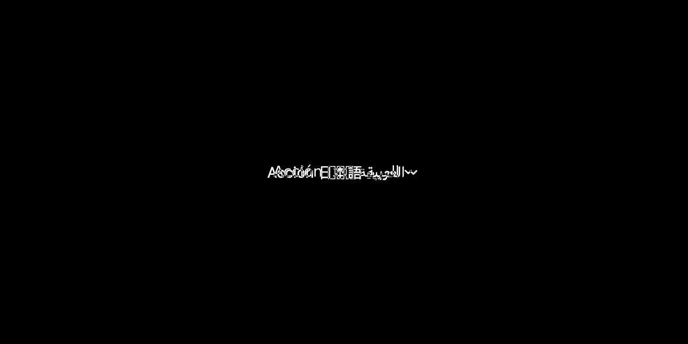
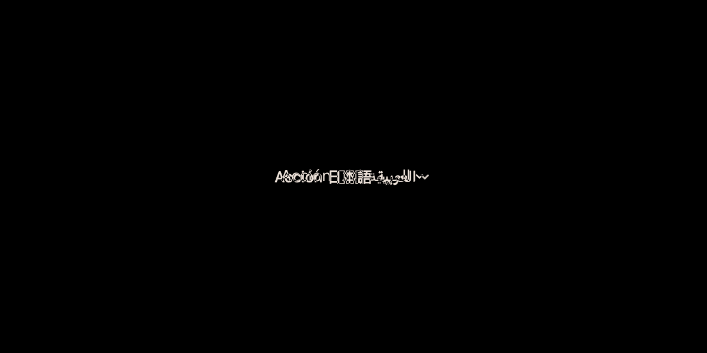

Reference and Linux candidate comparison
No resizing, ignored regions, or visual exceptions. Raw differences remain open.
evidence/reference-investigations/dropdown-menu-20261017/output/default-light-text1.0-dpr1.0-mode0.png
failed: 374 changed pixels; maximum channel error 249


evidence/reference-investigations/dropdown-menu-20261017/output/default-light-text1.0-dpr2.0-mode0.png
failed: 1296 changed pixels; maximum channel error 255


evidence/reference-investigations/dropdown-menu-20261017/output/default-light-text1.5-dpr1.0-mode0.png
failed: 374 changed pixels; maximum channel error 249


evidence/reference-investigations/dropdown-menu-20261017/output/default-light-text1.5-dpr2.0-mode0.png
failed: 1296 changed pixels; maximum channel error 255


evidence/reference-investigations/dropdown-menu-20261017/output/default-dark-text1.0-dpr1.0-mode0.png
failed: 381 changed pixels; maximum channel error 237


evidence/reference-investigations/dropdown-menu-20261017/output/default-dark-text1.0-dpr2.0-mode0.png
failed: 1333 changed pixels; maximum channel error 242


evidence/reference-investigations/dropdown-menu-20261017/output/default-dark-text1.5-dpr1.0-mode0.png
failed: 381 changed pixels; maximum channel error 237


evidence/reference-investigations/dropdown-menu-20261017/output/default-dark-text1.5-dpr2.0-mode0.png
failed: 1333 changed pixels; maximum channel error 242


evidence/reference-investigations/dropdown-menu-20261017/output/empty-items-light-text1.0-dpr1.0-mode0.png
failed: 374 changed pixels; maximum channel error 249


evidence/reference-investigations/dropdown-menu-20261017/output/empty-items-light-text1.0-dpr2.0-mode0.png
failed: 1296 changed pixels; maximum channel error 255


evidence/reference-investigations/dropdown-menu-20261017/output/empty-items-light-text1.5-dpr1.0-mode0.png
failed: 374 changed pixels; maximum channel error 249


evidence/reference-investigations/dropdown-menu-20261017/output/empty-items-light-text1.5-dpr2.0-mode0.png
failed: 1296 changed pixels; maximum channel error 255


evidence/reference-investigations/dropdown-menu-20261017/output/empty-items-dark-text1.0-dpr1.0-mode0.png
failed: 381 changed pixels; maximum channel error 237


evidence/reference-investigations/dropdown-menu-20261017/output/empty-items-dark-text1.0-dpr2.0-mode0.png
failed: 1333 changed pixels; maximum channel error 242


evidence/reference-investigations/dropdown-menu-20261017/output/empty-items-dark-text1.5-dpr1.0-mode0.png
failed: 381 changed pixels; maximum channel error 237


evidence/reference-investigations/dropdown-menu-20261017/output/empty-items-dark-text1.5-dpr2.0-mode0.png
failed: 1333 changed pixels; maximum channel error 242


evidence/reference-investigations/dropdown-menu-20261017/output/single-item-light-text1.0-dpr1.0-mode0.png
failed: 374 changed pixels; maximum channel error 249


evidence/reference-investigations/dropdown-menu-20261017/output/single-item-light-text1.0-dpr2.0-mode0.png
failed: 1296 changed pixels; maximum channel error 255


evidence/reference-investigations/dropdown-menu-20261017/output/single-item-light-text1.5-dpr1.0-mode0.png
failed: 374 changed pixels; maximum channel error 249


evidence/reference-investigations/dropdown-menu-20261017/output/single-item-light-text1.5-dpr2.0-mode0.png
failed: 1296 changed pixels; maximum channel error 255


evidence/reference-investigations/dropdown-menu-20261017/output/single-item-dark-text1.0-dpr1.0-mode0.png
failed: 381 changed pixels; maximum channel error 237


evidence/reference-investigations/dropdown-menu-20261017/output/single-item-dark-text1.0-dpr2.0-mode0.png
failed: 1333 changed pixels; maximum channel error 242


evidence/reference-investigations/dropdown-menu-20261017/output/single-item-dark-text1.5-dpr1.0-mode0.png
failed: 381 changed pixels; maximum channel error 237


evidence/reference-investigations/dropdown-menu-20261017/output/single-item-dark-text1.5-dpr2.0-mode0.png
failed: 1333 changed pixels; maximum channel error 242


evidence/reference-investigations/dropdown-menu-20261017/output/many-items-light-text1.0-dpr1.0-mode0.png
failed: 374 changed pixels; maximum channel error 249


evidence/reference-investigations/dropdown-menu-20261017/output/many-items-light-text1.0-dpr2.0-mode0.png
failed: 1296 changed pixels; maximum channel error 255


evidence/reference-investigations/dropdown-menu-20261017/output/many-items-light-text1.5-dpr1.0-mode0.png
failed: 374 changed pixels; maximum channel error 249


evidence/reference-investigations/dropdown-menu-20261017/output/many-items-light-text1.5-dpr2.0-mode0.png
failed: 1296 changed pixels; maximum channel error 255


evidence/reference-investigations/dropdown-menu-20261017/output/many-items-dark-text1.0-dpr1.0-mode0.png
failed: 381 changed pixels; maximum channel error 237


evidence/reference-investigations/dropdown-menu-20261017/output/many-items-dark-text1.0-dpr2.0-mode0.png
failed: 1333 changed pixels; maximum channel error 242


evidence/reference-investigations/dropdown-menu-20261017/output/many-items-dark-text1.5-dpr1.0-mode0.png
failed: 381 changed pixels; maximum channel error 237


evidence/reference-investigations/dropdown-menu-20261017/output/many-items-dark-text1.5-dpr2.0-mode0.png
failed: 1333 changed pixels; maximum channel error 242


evidence/reference-investigations/dropdown-menu-20261017/output/long-items-light-text1.0-dpr1.0-mode0.png
failed: 374 changed pixels; maximum channel error 249


evidence/reference-investigations/dropdown-menu-20261017/output/long-items-light-text1.0-dpr2.0-mode0.png
failed: 1296 changed pixels; maximum channel error 255


evidence/reference-investigations/dropdown-menu-20261017/output/long-items-light-text1.5-dpr1.0-mode0.png
failed: 374 changed pixels; maximum channel error 249


evidence/reference-investigations/dropdown-menu-20261017/output/long-items-light-text1.5-dpr2.0-mode0.png
failed: 1296 changed pixels; maximum channel error 255


evidence/reference-investigations/dropdown-menu-20261017/output/long-items-dark-text1.0-dpr1.0-mode0.png
failed: 381 changed pixels; maximum channel error 237


evidence/reference-investigations/dropdown-menu-20261017/output/long-items-dark-text1.0-dpr2.0-mode0.png
failed: 1333 changed pixels; maximum channel error 242


evidence/reference-investigations/dropdown-menu-20261017/output/long-items-dark-text1.5-dpr1.0-mode0.png
failed: 381 changed pixels; maximum channel error 237


evidence/reference-investigations/dropdown-menu-20261017/output/long-items-dark-text1.5-dpr2.0-mode0.png
failed: 1333 changed pixels; maximum channel error 242


evidence/reference-investigations/dropdown-menu-20261017/output/duplicate-titles-light-text1.0-dpr1.0-mode0.png
failed: 374 changed pixels; maximum channel error 249


evidence/reference-investigations/dropdown-menu-20261017/output/duplicate-titles-light-text1.0-dpr2.0-mode0.png
failed: 1296 changed pixels; maximum channel error 255


evidence/reference-investigations/dropdown-menu-20261017/output/duplicate-titles-light-text1.5-dpr1.0-mode0.png
failed: 374 changed pixels; maximum channel error 249


evidence/reference-investigations/dropdown-menu-20261017/output/duplicate-titles-light-text1.5-dpr2.0-mode0.png
failed: 1296 changed pixels; maximum channel error 255


evidence/reference-investigations/dropdown-menu-20261017/output/duplicate-titles-dark-text1.0-dpr1.0-mode0.png
failed: 381 changed pixels; maximum channel error 237


evidence/reference-investigations/dropdown-menu-20261017/output/duplicate-titles-dark-text1.0-dpr2.0-mode0.png
failed: 1333 changed pixels; maximum channel error 242


evidence/reference-investigations/dropdown-menu-20261017/output/duplicate-titles-dark-text1.5-dpr1.0-mode0.png
failed: 381 changed pixels; maximum channel error 237


evidence/reference-investigations/dropdown-menu-20261017/output/duplicate-titles-dark-text1.5-dpr2.0-mode0.png
failed: 1333 changed pixels; maximum channel error 242


evidence/reference-investigations/dropdown-menu-20261017/output/destructive-items-light-text1.0-dpr1.0-mode0.png
failed: 374 changed pixels; maximum channel error 249


evidence/reference-investigations/dropdown-menu-20261017/output/destructive-items-light-text1.0-dpr2.0-mode0.png
failed: 1296 changed pixels; maximum channel error 255


evidence/reference-investigations/dropdown-menu-20261017/output/destructive-items-light-text1.5-dpr1.0-mode0.png
failed: 374 changed pixels; maximum channel error 249


evidence/reference-investigations/dropdown-menu-20261017/output/destructive-items-light-text1.5-dpr2.0-mode0.png
failed: 1296 changed pixels; maximum channel error 255


evidence/reference-investigations/dropdown-menu-20261017/output/destructive-items-dark-text1.0-dpr1.0-mode0.png
failed: 381 changed pixels; maximum channel error 237


evidence/reference-investigations/dropdown-menu-20261017/output/destructive-items-dark-text1.0-dpr2.0-mode0.png
failed: 1333 changed pixels; maximum channel error 242


evidence/reference-investigations/dropdown-menu-20261017/output/destructive-items-dark-text1.5-dpr1.0-mode0.png
failed: 381 changed pixels; maximum channel error 237


evidence/reference-investigations/dropdown-menu-20261017/output/destructive-items-dark-text1.5-dpr2.0-mode0.png
failed: 1333 changed pixels; maximum channel error 242


evidence/reference-investigations/dropdown-menu-20261017/output/no-symbol-items-light-text1.0-dpr1.0-mode0.png
failed: 374 changed pixels; maximum channel error 249


evidence/reference-investigations/dropdown-menu-20261017/output/no-symbol-items-light-text1.0-dpr2.0-mode0.png
failed: 1296 changed pixels; maximum channel error 255


evidence/reference-investigations/dropdown-menu-20261017/output/no-symbol-items-light-text1.5-dpr1.0-mode0.png
failed: 374 changed pixels; maximum channel error 249


evidence/reference-investigations/dropdown-menu-20261017/output/no-symbol-items-light-text1.5-dpr2.0-mode0.png
failed: 1296 changed pixels; maximum channel error 255


evidence/reference-investigations/dropdown-menu-20261017/output/no-symbol-items-dark-text1.0-dpr1.0-mode0.png
failed: 381 changed pixels; maximum channel error 237


evidence/reference-investigations/dropdown-menu-20261017/output/no-symbol-items-dark-text1.0-dpr2.0-mode0.png
failed: 1333 changed pixels; maximum channel error 242


evidence/reference-investigations/dropdown-menu-20261017/output/no-symbol-items-dark-text1.5-dpr1.0-mode0.png
failed: 381 changed pixels; maximum channel error 237


evidence/reference-investigations/dropdown-menu-20261017/output/no-symbol-items-dark-text1.5-dpr2.0-mode0.png
failed: 1333 changed pixels; maximum channel error 242


evidence/reference-investigations/dropdown-menu-20261017/output/empty-label-light-text1.0-dpr1.0-mode0.png
failed: 32 changed pixels; maximum channel error 109


evidence/reference-investigations/dropdown-menu-20261017/output/empty-label-light-text1.0-dpr2.0-mode0.png
failed: 87 changed pixels; maximum channel error 213


evidence/reference-investigations/dropdown-menu-20261017/output/empty-label-light-text1.5-dpr1.0-mode0.png
failed: 32 changed pixels; maximum channel error 109


evidence/reference-investigations/dropdown-menu-20261017/output/empty-label-light-text1.5-dpr2.0-mode0.png
failed: 87 changed pixels; maximum channel error 213


evidence/reference-investigations/dropdown-menu-20261017/output/empty-label-dark-text1.0-dpr1.0-mode0.png
failed: 32 changed pixels; maximum channel error 104


evidence/reference-investigations/dropdown-menu-20261017/output/empty-label-dark-text1.0-dpr2.0-mode0.png
failed: 87 changed pixels; maximum channel error 202


evidence/reference-investigations/dropdown-menu-20261017/output/empty-label-dark-text1.5-dpr1.0-mode0.png
failed: 32 changed pixels; maximum channel error 104


evidence/reference-investigations/dropdown-menu-20261017/output/empty-label-dark-text1.5-dpr2.0-mode0.png
failed: 87 changed pixels; maximum channel error 202


evidence/reference-investigations/dropdown-menu-20261017/output/long-label-light-text1.0-dpr1.0-mode0.png
failed: 2794 changed pixels; maximum channel error 255


evidence/reference-investigations/dropdown-menu-20261017/output/long-label-light-text1.0-dpr2.0-mode0.png
failed: 9740 changed pixels; maximum channel error 255


evidence/reference-investigations/dropdown-menu-20261017/output/long-label-light-text1.5-dpr1.0-mode0.png
failed: 2794 changed pixels; maximum channel error 255

evidence/reference-investigations/dropdown-menu-20261017/output/long-label-light-text1.5-dpr2.0-mode0.png
failed: 9740 changed pixels; maximum channel error 255

evidence/reference-investigations/dropdown-menu-20261017/output/long-label-dark-text1.0-dpr1.0-mode0.png
failed: 2957 changed pixels; maximum channel error 242


evidence/reference-investigations/dropdown-menu-20261017/output/long-label-dark-text1.0-dpr2.0-mode0.png
failed: 10167 changed pixels; maximum channel error 242


evidence/reference-investigations/dropdown-menu-20261017/output/long-label-dark-text1.5-dpr1.0-mode0.png
failed: 2957 changed pixels; maximum channel error 242

evidence/reference-investigations/dropdown-menu-20261017/output/long-label-dark-text1.5-dpr2.0-mode0.png
failed: 10167 changed pixels; maximum channel error 242

evidence/reference-investigations/dropdown-menu-20261017/output/multiline-label-light-text1.0-dpr1.0-mode0.png
failed: 949 changed pixels; maximum channel error 255
evidence/reference-investigations/dropdown-menu-20261017/output/multiline-label-light-text1.0-dpr2.0-mode0.png
failed: 3348 changed pixels; maximum channel error 255


evidence/reference-investigations/dropdown-menu-20261017/output/multiline-label-light-text1.5-dpr1.0-mode0.png
failed: 949 changed pixels; maximum channel error 255


evidence/reference-investigations/dropdown-menu-20261017/output/multiline-label-light-text1.5-dpr2.0-mode0.png
failed: 3348 changed pixels; maximum channel error 255

evidence/reference-investigations/dropdown-menu-20261017/output/multiline-label-dark-text1.0-dpr1.0-mode0.png
failed: 980 changed pixels; maximum channel error 242


evidence/reference-investigations/dropdown-menu-20261017/output/multiline-label-dark-text1.0-dpr2.0-mode0.png
failed: 3457 changed pixels; maximum channel error 242
evidence/reference-investigations/dropdown-menu-20261017/output/multiline-label-dark-text1.5-dpr1.0-mode0.png
failed: 980 changed pixels; maximum channel error 242

evidence/reference-investigations/dropdown-menu-20261017/output/multiline-label-dark-text1.5-dpr2.0-mode0.png
failed: 3457 changed pixels; maximum channel error 242


evidence/reference-investigations/dropdown-menu-20261017/output/unicode-label-light-text1.0-dpr1.0-mode0.png
failed: 1033 changed pixels; maximum channel error 255

evidence/reference-investigations/dropdown-menu-20261017/output/unicode-label-light-text1.0-dpr2.0-mode0.png
failed: 3434 changed pixels; maximum channel error 255


evidence/reference-investigations/dropdown-menu-20261017/output/unicode-label-light-text1.5-dpr1.0-mode0.png
failed: 1033 changed pixels; maximum channel error 255


evidence/reference-investigations/dropdown-menu-20261017/output/unicode-label-light-text1.5-dpr2.0-mode0.png
failed: 3434 changed pixels; maximum channel error 255


evidence/reference-investigations/dropdown-menu-20261017/output/unicode-label-dark-text1.0-dpr1.0-mode0.png
failed: 1101 changed pixels; maximum channel error 242

evidence/reference-investigations/dropdown-menu-20261017/output/unicode-label-dark-text1.0-dpr2.0-mode0.png
failed: 3602 changed pixels; maximum channel error 242



evidence/reference-investigations/dropdown-menu-20261017/output/unicode-label-dark-text1.5-dpr1.0-mode0.png
failed: 1101 changed pixels; maximum channel error 242


evidence/reference-investigations/dropdown-menu-20261017/output/unicode-label-dark-text1.5-dpr2.0-mode0.png
failed: 3602 changed pixels; maximum channel error 242

evidence/reference-investigations/dropdown-menu-20261017/output/rtl-label-light-text1.0-dpr1.0-mode0.png
failed: 612 changed pixels; maximum channel error 255


evidence/reference-investigations/dropdown-menu-20261017/output/rtl-label-light-text1.0-dpr2.0-mode0.png
failed: 2044 changed pixels; maximum channel error 255


evidence/reference-investigations/dropdown-menu-20261017/output/rtl-label-light-text1.5-dpr1.0-mode0.png
failed: 612 changed pixels; maximum channel error 255

evidence/reference-investigations/dropdown-menu-20261017/output/rtl-label-light-text1.5-dpr2.0-mode0.png
failed: 2044 changed pixels; maximum channel error 255

evidence/reference-investigations/dropdown-menu-20261017/output/rtl-label-dark-text1.0-dpr1.0-mode0.png
failed: 631 changed pixels; maximum channel error 242
evidence/reference-investigations/dropdown-menu-20261017/output/rtl-label-dark-text1.0-dpr2.0-mode0.png
failed: 2120 changed pixels; maximum channel error 242

evidence/reference-investigations/dropdown-menu-20261017/output/rtl-label-dark-text1.5-dpr1.0-mode0.png
failed: 631 changed pixels; maximum channel error 242


evidence/reference-investigations/dropdown-menu-20261017/output/rtl-label-dark-text1.5-dpr2.0-mode0.png
failed: 2120 changed pixels; maximum channel error 242


evidence/reference-investigations/dropdown-menu-20261017/output/empty-view-light-text1.0-dpr1.0-mode0.png
failed: 32 changed pixels; maximum channel error 109


evidence/reference-investigations/dropdown-menu-20261017/output/empty-view-light-text1.0-dpr2.0-mode0.png
failed: 87 changed pixels; maximum channel error 213


evidence/reference-investigations/dropdown-menu-20261017/output/empty-view-light-text1.5-dpr1.0-mode0.png
failed: 32 changed pixels; maximum channel error 109

evidence/reference-investigations/dropdown-menu-20261017/output/empty-view-light-text1.5-dpr2.0-mode0.png
failed: 87 changed pixels; maximum channel error 213


evidence/reference-investigations/dropdown-menu-20261017/output/empty-view-dark-text1.0-dpr1.0-mode0.png
failed: 32 changed pixels; maximum channel error 104


evidence/reference-investigations/dropdown-menu-20261017/output/empty-view-dark-text1.0-dpr2.0-mode0.png
failed: 87 changed pixels; maximum channel error 202

evidence/reference-investigations/dropdown-menu-20261017/output/empty-view-dark-text1.5-dpr1.0-mode0.png
failed: 32 changed pixels; maximum channel error 104


evidence/reference-investigations/dropdown-menu-20261017/output/empty-view-dark-text1.5-dpr2.0-mode0.png
failed: 87 changed pixels; maximum channel error 202


evidence/reference-investigations/dropdown-menu-20261017/output/icon-light-text1.0-dpr1.0-mode0.png
failed: 75 changed pixels; maximum channel error 196


evidence/reference-investigations/dropdown-menu-20261017/output/icon-light-text1.0-dpr2.0-mode0.png
failed: 247 changed pixels; maximum channel error 255

evidence/reference-investigations/dropdown-menu-20261017/output/icon-light-text1.5-dpr1.0-mode0.png
failed: 75 changed pixels; maximum channel error 196

evidence/reference-investigations/dropdown-menu-20261017/output/icon-light-text1.5-dpr2.0-mode0.png
failed: 247 changed pixels; maximum channel error 255


evidence/reference-investigations/dropdown-menu-20261017/output/icon-dark-text1.0-dpr1.0-mode0.png
failed: 75 changed pixels; maximum channel error 186

evidence/reference-investigations/dropdown-menu-20261017/output/icon-dark-text1.0-dpr2.0-mode0.png
failed: 247 changed pixels; maximum channel error 242


evidence/reference-investigations/dropdown-menu-20261017/output/icon-dark-text1.5-dpr1.0-mode0.png
failed: 75 changed pixels; maximum channel error 186


evidence/reference-investigations/dropdown-menu-20261017/output/icon-dark-text1.5-dpr2.0-mode0.png
failed: 247 changed pixels; maximum channel error 242

evidence/reference-investigations/dropdown-menu-20261017/output/missing-icon-light-text1.0-dpr1.0-mode0.png
failed: 32 changed pixels; maximum channel error 109


evidence/reference-investigations/dropdown-menu-20261017/output/missing-icon-light-text1.0-dpr2.0-mode0.png
failed: 87 changed pixels; maximum channel error 213


evidence/reference-investigations/dropdown-menu-20261017/output/missing-icon-light-text1.5-dpr1.0-mode0.png
failed: 32 changed pixels; maximum channel error 109


evidence/reference-investigations/dropdown-menu-20261017/output/missing-icon-light-text1.5-dpr2.0-mode0.png
failed: 87 changed pixels; maximum channel error 213


evidence/reference-investigations/dropdown-menu-20261017/output/missing-icon-dark-text1.0-dpr1.0-mode0.png
failed: 32 changed pixels; maximum channel error 104


evidence/reference-investigations/dropdown-menu-20261017/output/missing-icon-dark-text1.0-dpr2.0-mode0.png
failed: 87 changed pixels; maximum channel error 202


evidence/reference-investigations/dropdown-menu-20261017/output/missing-icon-dark-text1.5-dpr1.0-mode0.png
failed: 32 changed pixels; maximum channel error 104


evidence/reference-investigations/dropdown-menu-20261017/output/missing-icon-dark-text1.5-dpr2.0-mode0.png
failed: 87 changed pixels; maximum channel error 202


evidence/reference-investigations/dropdown-menu-20261017/output/rectangle-light-text1.0-dpr1.0-mode0.png
failed: 32 changed pixels; maximum channel error 109


evidence/reference-investigations/dropdown-menu-20261017/output/rectangle-light-text1.0-dpr2.0-mode0.png
failed: 87 changed pixels; maximum channel error 213


evidence/reference-investigations/dropdown-menu-20261017/output/rectangle-light-text1.5-dpr1.0-mode0.png
failed: 32 changed pixels; maximum channel error 109


evidence/reference-investigations/dropdown-menu-20261017/output/rectangle-light-text1.5-dpr2.0-mode0.png
failed: 87 changed pixels; maximum channel error 213


evidence/reference-investigations/dropdown-menu-20261017/output/rectangle-dark-text1.0-dpr1.0-mode0.png
failed: 32 changed pixels; maximum channel error 104


evidence/reference-investigations/dropdown-menu-20261017/output/rectangle-dark-text1.0-dpr2.0-mode0.png
failed: 87 changed pixels; maximum channel error 202


evidence/reference-investigations/dropdown-menu-20261017/output/rectangle-dark-text1.5-dpr1.0-mode0.png
failed: 32 changed pixels; maximum channel error 104


evidence/reference-investigations/dropdown-menu-20261017/output/rectangle-dark-text1.5-dpr2.0-mode0.png
failed: 87 changed pixels; maximum channel error 202


evidence/reference-investigations/dropdown-menu-20261017/output/stack-light-text1.0-dpr1.0-mode0.png
failed: 566 changed pixels; maximum channel error 255


evidence/reference-investigations/dropdown-menu-20261017/output/stack-light-text1.0-dpr2.0-mode0.png
failed: 1734 changed pixels; maximum channel error 255

evidence/reference-investigations/dropdown-menu-20261017/output/stack-light-text1.5-dpr1.0-mode0.png
failed: 566 changed pixels; maximum channel error 255
evidence/reference-investigations/dropdown-menu-20261017/output/stack-light-text1.5-dpr2.0-mode0.png
failed: 1734 changed pixels; maximum channel error 255


evidence/reference-investigations/dropdown-menu-20261017/output/stack-dark-text1.0-dpr1.0-mode0.png
failed: 598 changed pixels; maximum channel error 242


evidence/reference-investigations/dropdown-menu-20261017/output/stack-dark-text1.0-dpr2.0-mode0.png
failed: 1766 changed pixels; maximum channel error 242


evidence/reference-investigations/dropdown-menu-20261017/output/stack-dark-text1.5-dpr1.0-mode0.png
failed: 598 changed pixels; maximum channel error 242

evidence/reference-investigations/dropdown-menu-20261017/output/stack-dark-text1.5-dpr2.0-mode0.png
failed: 1766 changed pixels; maximum channel error 242

evidence/reference-investigations/dropdown-menu-20261017/output/flat-light-text1.0-dpr1.0-mode0.png
failed: 374 changed pixels; maximum channel error 249


evidence/reference-investigations/dropdown-menu-20261017/output/flat-light-text1.0-dpr2.0-mode0.png
failed: 1296 changed pixels; maximum channel error 255


evidence/reference-investigations/dropdown-menu-20261017/output/flat-light-text1.5-dpr1.0-mode0.png
failed: 374 changed pixels; maximum channel error 249


evidence/reference-investigations/dropdown-menu-20261017/output/flat-light-text1.5-dpr2.0-mode0.png
failed: 1296 changed pixels; maximum channel error 255


evidence/reference-investigations/dropdown-menu-20261017/output/flat-dark-text1.0-dpr1.0-mode0.png
failed: 381 changed pixels; maximum channel error 237


evidence/reference-investigations/dropdown-menu-20261017/output/flat-dark-text1.0-dpr2.0-mode0.png
failed: 1333 changed pixels; maximum channel error 242


evidence/reference-investigations/dropdown-menu-20261017/output/flat-dark-text1.5-dpr1.0-mode0.png
failed: 381 changed pixels; maximum channel error 237


evidence/reference-investigations/dropdown-menu-20261017/output/flat-dark-text1.5-dpr2.0-mode0.png
failed: 1333 changed pixels; maximum channel error 242


evidence/reference-investigations/dropdown-menu-20261017/output/button-label-light-text1.0-dpr1.0-mode0.png
failed: 374 changed pixels; maximum channel error 249


evidence/reference-investigations/dropdown-menu-20261017/output/button-label-light-text1.0-dpr2.0-mode0.png
failed: 1296 changed pixels; maximum channel error 255


evidence/reference-investigations/dropdown-menu-20261017/output/button-label-light-text1.5-dpr1.0-mode0.png
failed: 374 changed pixels; maximum channel error 249


evidence/reference-investigations/dropdown-menu-20261017/output/button-label-light-text1.5-dpr2.0-mode0.png
failed: 1296 changed pixels; maximum channel error 255


evidence/reference-investigations/dropdown-menu-20261017/output/button-label-dark-text1.0-dpr1.0-mode0.png
failed: 381 changed pixels; maximum channel error 237


evidence/reference-investigations/dropdown-menu-20261017/output/button-label-dark-text1.0-dpr2.0-mode0.png
failed: 1333 changed pixels; maximum channel error 242


evidence/reference-investigations/dropdown-menu-20261017/output/button-label-dark-text1.5-dpr1.0-mode0.png
failed: 381 changed pixels; maximum channel error 237


evidence/reference-investigations/dropdown-menu-20261017/output/button-label-dark-text1.5-dpr2.0-mode0.png
failed: 1333 changed pixels; maximum channel error 242


evidence/reference-investigations/dropdown-menu-20261017/output/explicit-font-light-text1.0-dpr1.0-mode0.png
failed: 1905 changed pixels; maximum channel error 255

evidence/reference-investigations/dropdown-menu-20261017/output/explicit-font-light-text1.0-dpr2.0-mode0.png
failed: 6860 changed pixels; maximum channel error 255
evidence/reference-investigations/dropdown-menu-20261017/output/explicit-font-light-text1.5-dpr1.0-mode0.png
failed: 1905 changed pixels; maximum channel error 255


evidence/reference-investigations/dropdown-menu-20261017/output/explicit-font-light-text1.5-dpr2.0-mode0.png
failed: 6860 changed pixels; maximum channel error 255


evidence/reference-investigations/dropdown-menu-20261017/output/explicit-font-dark-text1.0-dpr1.0-mode0.png
failed: 1937 changed pixels; maximum channel error 242


evidence/reference-investigations/dropdown-menu-20261017/output/explicit-font-dark-text1.0-dpr2.0-mode0.png
failed: 6861 changed pixels; maximum channel error 242


evidence/reference-investigations/dropdown-menu-20261017/output/explicit-font-dark-text1.5-dpr1.0-mode0.png
failed: 1937 changed pixels; maximum channel error 242
evidence/reference-investigations/dropdown-menu-20261017/output/explicit-font-dark-text1.5-dpr2.0-mode0.png
failed: 6861 changed pixels; maximum channel error 242

evidence/reference-investigations/dropdown-menu-20261017/output/explicit-red-light-text1.0-dpr1.0-mode0.png
failed: 374 changed pixels; maximum channel error 199


evidence/reference-investigations/dropdown-menu-20261017/output/explicit-red-light-text1.0-dpr2.0-mode0.png
failed: 1242 changed pixels; maximum channel error 255

evidence/reference-investigations/dropdown-menu-20261017/output/explicit-red-light-text1.5-dpr1.0-mode0.png
failed: 374 changed pixels; maximum channel error 199

evidence/reference-investigations/dropdown-menu-20261017/output/explicit-red-light-text1.5-dpr2.0-mode0.png
failed: 1242 changed pixels; maximum channel error 255


evidence/reference-investigations/dropdown-menu-20261017/output/explicit-red-dark-text1.0-dpr1.0-mode0.png
failed: 374 changed pixels; maximum channel error 242
evidence/reference-investigations/dropdown-menu-20261017/output/explicit-red-dark-text1.0-dpr2.0-mode0.png
failed: 1254 changed pixels; maximum channel error 242


evidence/reference-investigations/dropdown-menu-20261017/output/explicit-red-dark-text1.5-dpr1.0-mode0.png
failed: 374 changed pixels; maximum channel error 242


evidence/reference-investigations/dropdown-menu-20261017/output/explicit-red-dark-text1.5-dpr2.0-mode0.png
failed: 1254 changed pixels; maximum channel error 242

evidence/reference-investigations/dropdown-menu-20261017/output/parent-font-light-text1.0-dpr1.0-mode0.png
failed: 374 changed pixels; maximum channel error 249


evidence/reference-investigations/dropdown-menu-20261017/output/parent-font-light-text1.0-dpr2.0-mode0.png
failed: 1296 changed pixels; maximum channel error 255


evidence/reference-investigations/dropdown-menu-20261017/output/parent-font-light-text1.5-dpr1.0-mode0.png
failed: 374 changed pixels; maximum channel error 249


evidence/reference-investigations/dropdown-menu-20261017/output/parent-font-light-text1.5-dpr2.0-mode0.png
failed: 1296 changed pixels; maximum channel error 255


evidence/reference-investigations/dropdown-menu-20261017/output/parent-font-dark-text1.0-dpr1.0-mode0.png
failed: 381 changed pixels; maximum channel error 237


evidence/reference-investigations/dropdown-menu-20261017/output/parent-font-dark-text1.0-dpr2.0-mode0.png
failed: 1333 changed pixels; maximum channel error 242


evidence/reference-investigations/dropdown-menu-20261017/output/parent-font-dark-text1.5-dpr1.0-mode0.png
failed: 381 changed pixels; maximum channel error 237


evidence/reference-investigations/dropdown-menu-20261017/output/parent-font-dark-text1.5-dpr2.0-mode0.png
failed: 1333 changed pixels; maximum channel error 242


evidence/reference-investigations/dropdown-menu-20261017/output/parent-red-light-text1.0-dpr1.0-mode0.png
failed: 374 changed pixels; maximum channel error 249


evidence/reference-investigations/dropdown-menu-20261017/output/parent-red-light-text1.0-dpr2.0-mode0.png
failed: 1296 changed pixels; maximum channel error 255


evidence/reference-investigations/dropdown-menu-20261017/output/parent-red-light-text1.5-dpr1.0-mode0.png
failed: 374 changed pixels; maximum channel error 249


evidence/reference-investigations/dropdown-menu-20261017/output/parent-red-light-text1.5-dpr2.0-mode0.png
failed: 1296 changed pixels; maximum channel error 255


evidence/reference-investigations/dropdown-menu-20261017/output/parent-red-dark-text1.0-dpr1.0-mode0.png
failed: 381 changed pixels; maximum channel error 237


evidence/reference-investigations/dropdown-menu-20261017/output/parent-red-dark-text1.0-dpr2.0-mode0.png
failed: 1333 changed pixels; maximum channel error 242


evidence/reference-investigations/dropdown-menu-20261017/output/parent-red-dark-text1.5-dpr1.0-mode0.png
failed: 381 changed pixels; maximum channel error 237


evidence/reference-investigations/dropdown-menu-20261017/output/parent-red-dark-text1.5-dpr2.0-mode0.png
failed: 1333 changed pixels; maximum channel error 242


evidence/reference-investigations/dropdown-menu-20261017/output/disabled-light-text1.0-dpr1.0-mode0.png
failed: 372 changed pixels; maximum channel error 112


evidence/reference-investigations/dropdown-menu-20261017/output/disabled-light-text1.0-dpr2.0-mode0.png
failed: 1287 changed pixels; maximum channel error 112

evidence/reference-investigations/dropdown-menu-20261017/output/disabled-light-text1.5-dpr1.0-mode0.png
failed: 372 changed pixels; maximum channel error 112

evidence/reference-investigations/dropdown-menu-20261017/output/disabled-light-text1.5-dpr2.0-mode0.png
failed: 1287 changed pixels; maximum channel error 112


evidence/reference-investigations/dropdown-menu-20261017/output/disabled-dark-text1.0-dpr1.0-mode0.png
failed: 381 changed pixels; maximum channel error 106


evidence/reference-investigations/dropdown-menu-20261017/output/disabled-dark-text1.0-dpr2.0-mode0.png
failed: 1324 changed pixels; maximum channel error 106


evidence/reference-investigations/dropdown-menu-20261017/output/disabled-dark-text1.5-dpr1.0-mode0.png
failed: 381 changed pixels; maximum channel error 106
evidence/reference-investigations/dropdown-menu-20261017/output/disabled-dark-text1.5-dpr2.0-mode0.png
failed: 1324 changed pixels; maximum channel error 106

evidence/reference-investigations/dropdown-menu-20261017/output/zero-light-text1.0-dpr1.0-mode0.png
failed: 32 changed pixels; maximum channel error 202

evidence/reference-investigations/dropdown-menu-20261017/output/zero-light-text1.0-dpr2.0-mode0.png
failed: 76 changed pixels; maximum channel error 217

evidence/reference-investigations/dropdown-menu-20261017/output/zero-light-text1.5-dpr1.0-mode0.png
failed: 32 changed pixels; maximum channel error 202


evidence/reference-investigations/dropdown-menu-20261017/output/zero-light-text1.5-dpr2.0-mode0.png
failed: 76 changed pixels; maximum channel error 217


evidence/reference-investigations/dropdown-menu-20261017/output/zero-dark-text1.0-dpr1.0-mode0.png
failed: 32 changed pixels; maximum channel error 192


evidence/reference-investigations/dropdown-menu-20261017/output/zero-dark-text1.0-dpr2.0-mode0.png
failed: 76 changed pixels; maximum channel error 206

evidence/reference-investigations/dropdown-menu-20261017/output/zero-dark-text1.5-dpr1.0-mode0.png
failed: 32 changed pixels; maximum channel error 192

evidence/reference-investigations/dropdown-menu-20261017/output/zero-dark-text1.5-dpr2.0-mode0.png
failed: 76 changed pixels; maximum channel error 206


evidence/reference-investigations/dropdown-menu-20261017/output/narrow-light-text1.0-dpr1.0-mode0.png
failed: 110 changed pixels; maximum channel error 249

evidence/reference-investigations/dropdown-menu-20261017/output/narrow-light-text1.0-dpr2.0-mode0.png
failed: 306 changed pixels; maximum channel error 249
evidence/reference-investigations/dropdown-menu-20261017/output/narrow-light-text1.5-dpr1.0-mode0.png
failed: 110 changed pixels; maximum channel error 249


evidence/reference-investigations/dropdown-menu-20261017/output/narrow-light-text1.5-dpr2.0-mode0.png
failed: 306 changed pixels; maximum channel error 249


evidence/reference-investigations/dropdown-menu-20261017/output/narrow-dark-text1.0-dpr1.0-mode0.png
failed: 116 changed pixels; maximum channel error 237

evidence/reference-investigations/dropdown-menu-20261017/output/narrow-dark-text1.0-dpr2.0-mode0.png
failed: 322 changed pixels; maximum channel error 237


evidence/reference-investigations/dropdown-menu-20261017/output/narrow-dark-text1.5-dpr1.0-mode0.png
failed: 116 changed pixels; maximum channel error 237


evidence/reference-investigations/dropdown-menu-20261017/output/narrow-dark-text1.5-dpr2.0-mode0.png
failed: 322 changed pixels; maximum channel error 237

evidence/reference-investigations/dropdown-menu-20261017/output/wide-light-text1.0-dpr1.0-mode0.png
failed: 374 changed pixels; maximum channel error 249


evidence/reference-investigations/dropdown-menu-20261017/output/wide-light-text1.0-dpr2.0-mode0.png
failed: 1296 changed pixels; maximum channel error 255


evidence/reference-investigations/dropdown-menu-20261017/output/wide-light-text1.5-dpr1.0-mode0.png
failed: 374 changed pixels; maximum channel error 249


evidence/reference-investigations/dropdown-menu-20261017/output/wide-light-text1.5-dpr2.0-mode0.png
failed: 1296 changed pixels; maximum channel error 255


evidence/reference-investigations/dropdown-menu-20261017/output/wide-dark-text1.0-dpr1.0-mode0.png
failed: 381 changed pixels; maximum channel error 237


evidence/reference-investigations/dropdown-menu-20261017/output/wide-dark-text1.0-dpr2.0-mode0.png
failed: 1333 changed pixels; maximum channel error 242


evidence/reference-investigations/dropdown-menu-20261017/output/wide-dark-text1.5-dpr1.0-mode0.png
failed: 381 changed pixels; maximum channel error 237


evidence/reference-investigations/dropdown-menu-20261017/output/wide-dark-text1.5-dpr2.0-mode0.png
failed: 1333 changed pixels; maximum channel error 242


evidence/reference-investigations/dropdown-menu-20261017/output/height-zero-light-text1.0-dpr1.0-mode0.png
failed: 374 changed pixels; maximum channel error 249


evidence/reference-investigations/dropdown-menu-20261017/output/height-zero-light-text1.0-dpr2.0-mode0.png
failed: 1296 changed pixels; maximum channel error 255


evidence/reference-investigations/dropdown-menu-20261017/output/height-zero-light-text1.5-dpr1.0-mode0.png
failed: 374 changed pixels; maximum channel error 249


evidence/reference-investigations/dropdown-menu-20261017/output/height-zero-light-text1.5-dpr2.0-mode0.png
failed: 1296 changed pixels; maximum channel error 255


evidence/reference-investigations/dropdown-menu-20261017/output/height-zero-dark-text1.0-dpr1.0-mode0.png
failed: 381 changed pixels; maximum channel error 237


evidence/reference-investigations/dropdown-menu-20261017/output/height-zero-dark-text1.0-dpr2.0-mode0.png
failed: 1333 changed pixels; maximum channel error 242


evidence/reference-investigations/dropdown-menu-20261017/output/height-zero-dark-text1.5-dpr1.0-mode0.png
failed: 381 changed pixels; maximum channel error 237


evidence/reference-investigations/dropdown-menu-20261017/output/height-zero-dark-text1.5-dpr2.0-mode0.png
failed: 1333 changed pixels; maximum channel error 242


evidence/reference-investigations/dropdown-menu-20261017/output/control-mini-light-text1.0-dpr1.0-mode0.png
failed: 217 changed pixels; maximum channel error 253
evidence/reference-investigations/dropdown-menu-20261017/output/control-mini-light-text1.0-dpr2.0-mode0.png
failed: 691 changed pixels; maximum channel error 255


evidence/reference-investigations/dropdown-menu-20261017/output/control-mini-light-text1.5-dpr1.0-mode0.png
failed: 217 changed pixels; maximum channel error 253


evidence/reference-investigations/dropdown-menu-20261017/output/control-mini-light-text1.5-dpr2.0-mode0.png
failed: 691 changed pixels; maximum channel error 255

evidence/reference-investigations/dropdown-menu-20261017/output/control-mini-dark-text1.0-dpr1.0-mode0.png
failed: 221 changed pixels; maximum channel error 240
evidence/reference-investigations/dropdown-menu-20261017/output/control-mini-dark-text1.0-dpr2.0-mode0.png
failed: 713 changed pixels; maximum channel error 242

evidence/reference-investigations/dropdown-menu-20261017/output/control-mini-dark-text1.5-dpr1.0-mode0.png
failed: 221 changed pixels; maximum channel error 240


evidence/reference-investigations/dropdown-menu-20261017/output/control-mini-dark-text1.5-dpr2.0-mode0.png
failed: 713 changed pixels; maximum channel error 242


evidence/reference-investigations/dropdown-menu-20261017/output/control-small-light-text1.0-dpr1.0-mode0.png
failed: 249 changed pixels; maximum channel error 240

evidence/reference-investigations/dropdown-menu-20261017/output/control-small-light-text1.0-dpr2.0-mode0.png
failed: 961 changed pixels; maximum channel error 255

evidence/reference-investigations/dropdown-menu-20261017/output/control-small-light-text1.5-dpr1.0-mode0.png
failed: 249 changed pixels; maximum channel error 240


evidence/reference-investigations/dropdown-menu-20261017/output/control-small-light-text1.5-dpr2.0-mode0.png
failed: 961 changed pixels; maximum channel error 255


evidence/reference-investigations/dropdown-menu-20261017/output/control-small-dark-text1.0-dpr1.0-mode0.png
failed: 266 changed pixels; maximum channel error 233


evidence/reference-investigations/dropdown-menu-20261017/output/control-small-dark-text1.0-dpr2.0-mode0.png
failed: 998 changed pixels; maximum channel error 242

evidence/reference-investigations/dropdown-menu-20261017/output/control-small-dark-text1.5-dpr1.0-mode0.png
failed: 266 changed pixels; maximum channel error 233
evidence/reference-investigations/dropdown-menu-20261017/output/control-small-dark-text1.5-dpr2.0-mode0.png
failed: 998 changed pixels; maximum channel error 242


evidence/reference-investigations/dropdown-menu-20261017/output/control-large-light-text1.0-dpr1.0-mode0.png
failed: 374 changed pixels; maximum channel error 249


evidence/reference-investigations/dropdown-menu-20261017/output/control-large-light-text1.0-dpr2.0-mode0.png
failed: 1296 changed pixels; maximum channel error 255


evidence/reference-investigations/dropdown-menu-20261017/output/control-large-light-text1.5-dpr1.0-mode0.png
failed: 374 changed pixels; maximum channel error 249


evidence/reference-investigations/dropdown-menu-20261017/output/control-large-light-text1.5-dpr2.0-mode0.png
failed: 1296 changed pixels; maximum channel error 255


evidence/reference-investigations/dropdown-menu-20261017/output/control-large-dark-text1.0-dpr1.0-mode0.png
failed: 381 changed pixels; maximum channel error 237


evidence/reference-investigations/dropdown-menu-20261017/output/control-large-dark-text1.0-dpr2.0-mode0.png
failed: 1333 changed pixels; maximum channel error 242


evidence/reference-investigations/dropdown-menu-20261017/output/control-large-dark-text1.5-dpr1.0-mode0.png
failed: 381 changed pixels; maximum channel error 237


evidence/reference-investigations/dropdown-menu-20261017/output/control-large-dark-text1.5-dpr2.0-mode0.png
failed: 1333 changed pixels; maximum channel error 242